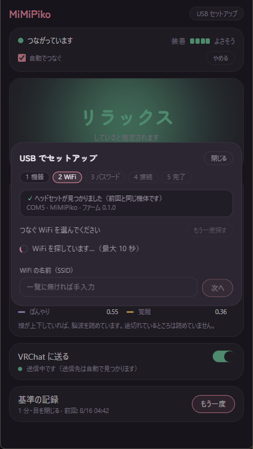
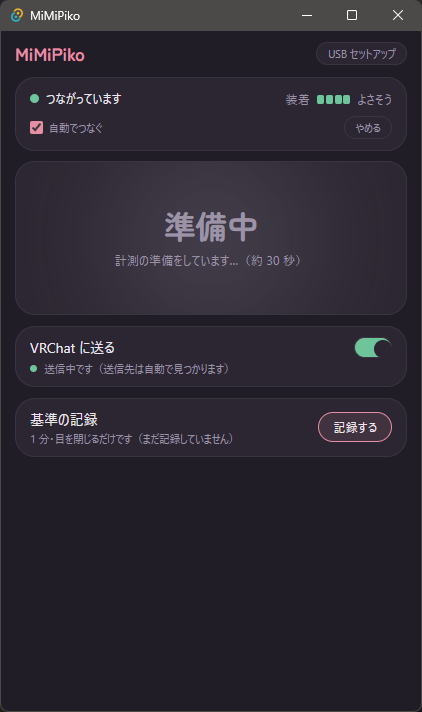
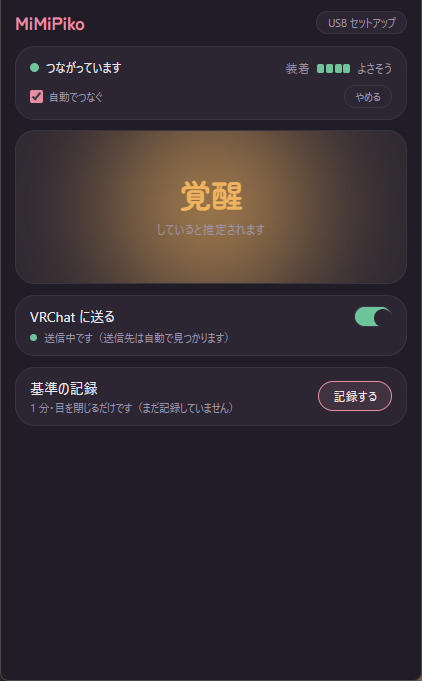
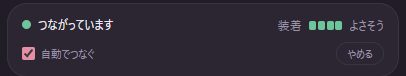
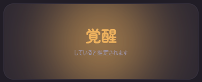
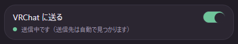
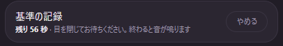

あなたの「いまの状態」を、VRChat のアバターへ。
MiMiPiko は、ヘッドセット型のセンサーで読み取った「いまのあなたの状態」—— 集中している、リラックスしている、ぼんやりしている など——を、 VRChat のアバターに自動で反映するためのパソコン用アプリです。
アプリを起動しておくだけで、ヘッドセットに自動でつながり、状態を読み取り、 VRChat へ届けます。むずかしい設定はありません。
はじめに一度だけ、ヘッドセットにご自宅の Wi-Fi を教えてあげる必要があります。 これが終われば、次からは電源を入れるだけで自動でつながります。




左側がヘッドセットとの接続、右側が装着のようすです。 装着メーターの表示は次のとおりです。
「自動でつなぐ」にチェックが入っていれば、アプリを起動するだけで毎回自動で つながります。「やめる」を押すと接続を切れます（もう一度つなぐには「つなぐ」を押します）。

画面の中央に、いまの状態が大きく表示されます。表示されるのは次の 5 つです。
| 表示 | 意味 |
|---|---|
| 集中 | 何かに集中して取り組んでいるようす |
| リラックス | 起きたまま、落ち着いてくつろいでいるようす |
| ぼんやり | 注意がゆるんで、ぼーっとしているようす |
| 覚醒 | 頭や体に力が入って、活動が高まっているようす |
| 平常 | いつもどおりの状態 |
「—」と表示されて「装着を確認してください」と出ているときは、センサーがうまく 肌に当たっていません。かぶり直すと戻ります。

このスイッチをオンにすると、読み取った状態が VRChat のアバターに届きます。 送り先は自動で見つかるので、入力するものはありません。
脳波のようすは人によって少しずつちがいます。「リラックスしているのに、 そう表示されないな」と感じたら、基準の記録を試してみてください。 目を閉じてくつろいだときのあなたの波を 1 分間記録して、リラックスの判定を あなたに合わせます。

| 画面の表示 | 意味と対処 |
|---|---|
| ヘッドセットを探しています… | ヘッドセットがまだ見つかっていません。電源が入っているか、パソコンと同じ Wi-Fi につながっているかを確認してください。見つかりしだい自動でつながります。 |
| 接続していません | 「やめる」を押したあとの状態です。「つなぐ」を押すとつながります。 |
| ヘッドセットが複数見つかりました | 同じ Wi-Fi に 2 台以上のヘッドセットがあります。まちがえて他の人のものに つながないよう、一覧からご自分のものを選んでください。 |
| 「準備中」のまま変わらない | 起動から 30 秒ほどは準備中のままで正常です。それより長く続くときは、 装着メーターが「よさそう」になっているか確認してください。 |
| 状態が「—」になる | センサーが肌から離れています。ヘッドセットをかぶり直し、センサーが おでこに当たるようにしてください。 |
| 送れていません（VRChat） | VRChat が起動しているか、VRChat のメニューで「Options → OSC → Enabled」が オンになっているかを確認してください。 |
| 記録できませんでした（基準の記録） | 記録の途中でセンサーの当たりが弱くなったか、接続が切れました。 装着を直し、つながっている状態でもう一度お試しください。 |